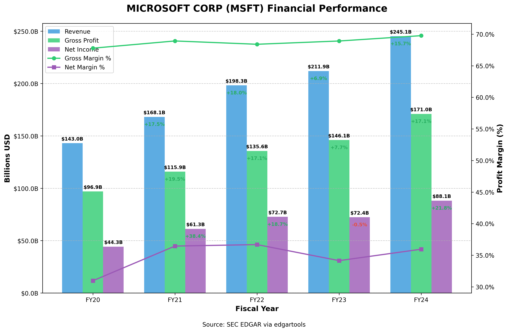

Solve Real Problems with EdgarTools
This document showcases common workflows and tasks that financial professionals, developers, and researchers can accomplish using EdgarTools. Each journey addresses a specific problem and provides a concise code example.
1. Company Financial Analysis
Problem: Need to analyze a company's financial health across multiple periods.

def get_income_dataframe(ticker:str):
c = Company(ticker)
filings = c.get_filings(form="10-K").latest(5)
xbs = XBRLS.from_filings(filings)
income_statement = xbs.statements.income_statement()
income_df = income_statement.to_dataframe()
return income_df
def plot_revenue(ticker:str):
income_df = get_income_dataframe(ticker)
# Extract financial metrics
net_income = income_df[income_df.concept == "us-gaap_NetIncomeLoss"][income_statement.periods].iloc[0]
gross_profit = income_df[income_df.concept == "us-gaap_GrossProfit"][income_statement.periods].iloc[0]
revenue = income_df[income_df.label == "Revenue"][income_statement.periods].iloc[0]
# Convert periods to fiscal years for better readability
periods = [pd.to_datetime(period).strftime('FY%y') for period in income_statement.periods]
# Reverse the order so most recent years are last (oldest to newest)
periods = periods[::-1]
revenue_values = revenue.values[::-1]
gross_profit_values = gross_profit.values[::-1]
net_income_values = net_income.values[::-1]
# Create a DataFrame for plotting
plot_data = pd.DataFrame({
'Revenue': revenue_values,
'Gross Profit': gross_profit_values,
'Net Income': net_income_values
}, index=periods)
# Convert to billions for better readability
plot_data = plot_data / 1e9
# Create the figure
fig, ax = plt.subplots(figsize=(10, 6))
# Plot the data as lines with markers
plot_data.plot(kind='line', marker='o', ax=ax, linewidth=2.5)
# Format the y-axis to show billions with 1 decimal place
ax.yaxis.set_major_formatter(mtick.FuncFormatter(lambda x, _: f'${x:.1f}B'))
# Add labels and title
ax.set_xlabel('Fiscal Year')
ax.set_ylabel('Billions USD')
ax.set_title(f'{c.name} ({ticker}) Financial Performance')
# Add a grid for better readability
ax.grid(True, linestyle='--', alpha=0.7)
# Add a source note
plt.figtext(0.5, 0.01, 'Source: SEC EDGAR via edgartools', ha='center', fontsize=9)
# Improve layout
plt.tight_layout(rect=[0, 0.03, 1, 0.97])
return fig
2. Investment Fund Research
Problem: Need to analyze fund holdings and compare share classes.
from edgar import find
# Find a fund by ticker
fund = find("VFIAX") # Vanguard 500 Index Fund
# Get the fund's structure
classes = fund.get_classes()
print(f"Fund has {len(classes)} share classes")
# Get the latest portfolio holdings
portfolio = fund.get_portfolio()
# Show top 10 holdings by value
top_holdings = portfolio.sort_values('value', ascending=False).head(10)
top_holdings